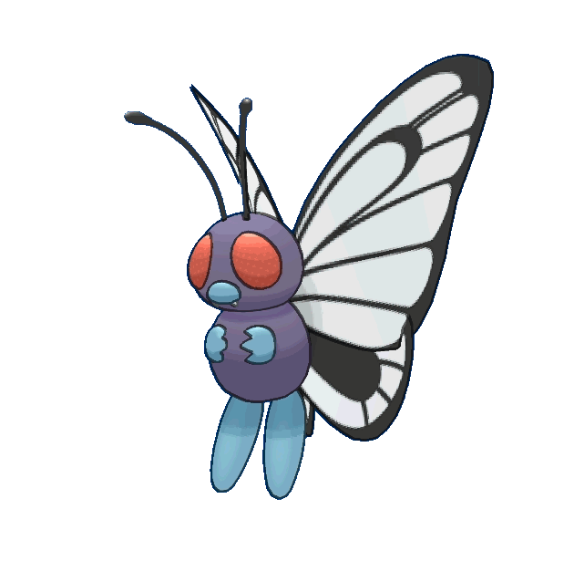

-
bulbassauro #001
- Grama
- Veneno
Há uma semente de planta em suas costas desde o dia que este Pókemon nasce. A semente cresce lentamente.
-
Ivyssauro #002

- Grama
- Veneno
Quando o bulbo em suas costas cresce grande,parece perder suas capacidade de ficar de pé em suas patas traseiras.
-
venassauro #003

- Grama
- Veneno
Sua planta floresce quando está absorvendo energia solar.Ele permanece em movimento para buscar a luz do sol.
-
Mega venassauro #004

- Grama
- Veneno
Há uma grande flor nas costas de Venusaur. Diz-se que a flor adquire cores vivas se receber muita nutrição e luz solar. O aroma da flor acalma as emoções das pessoas.
-
Charmander #004

- Fogo
Tem preferência por coisas quentes. Quando chove, diz-se que o vapor jorra da ponta de sua cauda.
-
Charmeleon #005

- Fogo
Tem uma natureza bárbara. Na batalha, ele chicoteia sua cauda ardente e corta com garras afiadas.
-
Charizard #006

- Fogo
- Dragão
Ele cospe fogo que é quente o suficiente para derreter pedregulhos. Pode causar incêndios florestais soprando chamas.
-
Mega Charizard #007

- Fogo
- Dragão
Charizard voa pelo céu em busca de oponentes poderosos. Ele exala fogo de um calor tão grande que derrete qualquer coisa.
-
Squirtle #008
- água
Quando ele retrai seu longo pescoço em sua concha, ele esguicha água com força vigorosa.
-
Watortle #009
- água
É reconhecido como um símbolo de longevidade. Se sua concha tem algas, esse Wartortle é muito antigo.
-
Blastoise #0010

- água
Ele esmaga seu inimigo sob seu corpo pesado para causar desmaios. Em uma pitada, ele se retirará dentro de sua concha.
-
Blastoise #0011

- água
Blastoise tem bicos de água que se projetam de sua concha. Os bicos de água são muito precisos. Eles podem atirar balas de água com precisão suficiente para atingir latas vazias.
-
Caterpie #011
- Inseto
Para proteção, ele libera um fedor horrível da antena em sua cabeça para afastar os inimigos.
-
Metapod #012

- Inseto
Está esperando o momento de evoluir. Nesta fase, só pode endurecer, por isso permanece imóvel para evitar o ataque.
-
Butterfree #013
- Inseto
Em batalha, ele bate as asas em grande velocidade para liberar poeira altamente tóxica no ar.